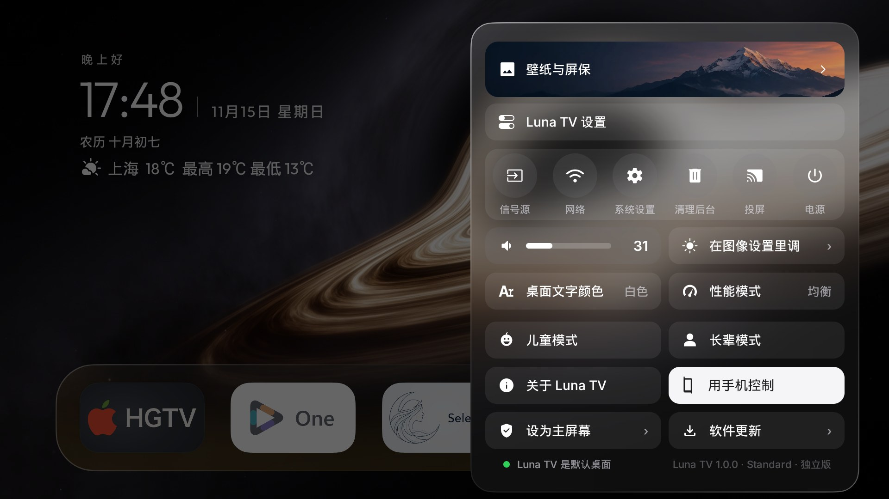
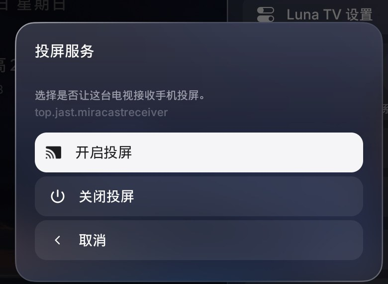
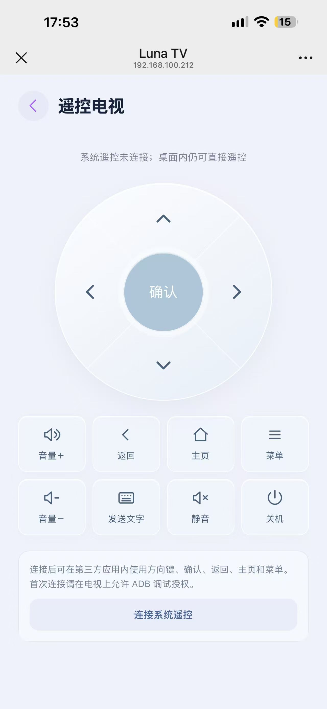
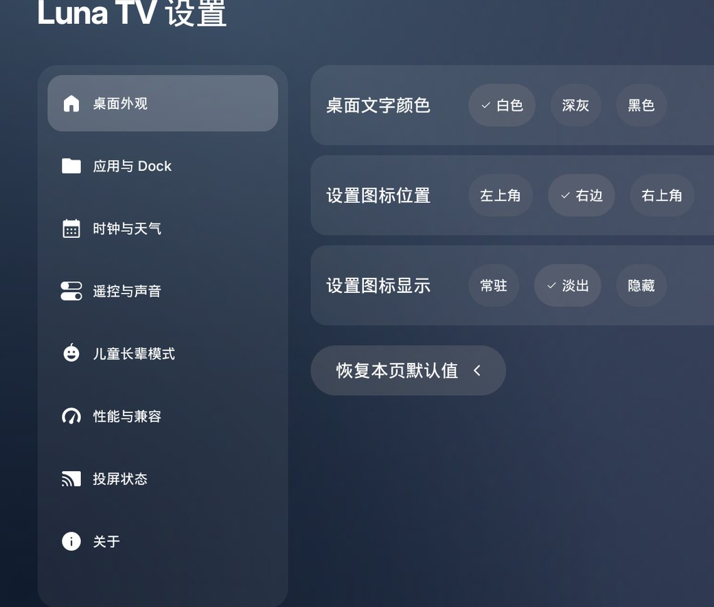

为什么是 Luna TV
电视不该在打开的那一刻，
先让你看一堆不想看的东西。
Luna TV 把桌面收拢成一张安静的壁纸，或一段循环播放的影像：左边是时间、农历和天气，下面是只放常用应用的 Dock。想看什么，由你决定，而不是由首屏替你决定。
需要调音量、开投屏、清后台或换壁纸时，按一下菜单键，控制中心从右侧滑出。手机不在手边，也能用同一 Wi-Fi 下的浏览器接管方向键和文字输入。
桌面
只留下你真正会看的东西。
时间、日期、农历、天气和剩余内存，落在壁纸的留白里；Dock 只放你常用的应用。没有推荐瀑布流，也没有被入口塞满的首屏。壁纸可以换，静态图片和动态视频都能放；时钟和天气的位置也可以按你的习惯来。
默认桌面，也可以随时退出。第一次打开时，Luna TV 会引导你把 HOME 键交给它；不想用了，在系统设置里换回原来的桌面即可，不会锁住电视。
控制中心
按一下菜单，
常用开关都在手边。
信号源、网络、系统设置、清理后台、投屏、电源、音量、桌面文字颜色、性能模式、儿童与长辈模式、关于、用手机控制、设为主屏幕和软件更新，都在同一张面板里。不用退出当前画面，也不用翻三层系统菜单。
投屏不是藏在深处的设置。它就在控制中心第一排；首次使用如果电视上没有接收器，Luna TV 会提示下载并安装 Miracast Receiver，装好后回到面板开启。

投屏 · 1.0.0
手机上的画面，
交给电视。
控制中心第一排新增「投屏」。点开弹窗就能开启或关闭接收服务；如果电视上还没装接收器，Luna TV 会提示下载并安装，而不是把第三方组件悄悄塞进安装包。
控制中心第一排，和清理后台、系统设置并排。
开启、关闭、取消都在同一个弹窗；设置里另有一页投屏状态。
需要 top.jast.miracastreceiver；未安装时提示下载，不内置。

手机遥控
找不到遥控器的时候，
手机就是遥控器。
同一 Wi-Fi 下，扫描电视上的二维码，手机浏览器会直接打开遥控页。方向盘、确认、返回、主页、菜单、音量、静音和关机都在；还可以在手机上输入文字，发送到电视当前的输入框。
不需要在手机上再装一个 App，也不会把局域网地址暴露在公网。电视上的二维码只在当前网络内有效。

电视上扫码，手机直接接管同一 Wi-Fi 下打开遥控页；不用另外下载 App。
实际手机页面 · 遥控电视第三方应用内全局按键需一次 ADB 调试授权；文字落字取决于输入框焦点与输入法
设置与更新
设置不是迷宫，
更新也不必去论坛找 APK。
桌面外观、应用与 Dock、时钟与天气、遥控与声音、儿童长辈模式、性能与兼容、投屏状态和关于，分在左侧一列。想改哪一块，直接进去；不想改，退回桌面就好。
版本更新直接读取 GitHub Releases，只接受 LunaTV- 开头的 Standard APK。检查、下载、安装都在应用内完成；没有新版本时，不会反复打扰你。

这一版，Luna TV 重新做了这些。
1.0.0 · Standard · 2026
从桌面到图标，换成 Luna
应用包名改为 app.luna.tv，月牙图标、深海军蓝启动页、宽版 banner 和关于页统一为 Luna 品牌；默认 HOME 指向 Luna TV。
手机接管方向键和文字
扫码打开手机遥控页；方向盘、确认、返回、主页、菜单、音量、静音、关机和文字发送都在同一页。桌面前台时直接派发；第三方应用内需完成一次 ADB 调试授权后，通过系统按键通道转发。
控制中心里的一个开关
第一排加入「投屏」，开启、关闭和取消都在弹窗里完成；设置里新增投屏状态页。未安装接收器时提示下载 top.jast.miracastreceiver，不把第三方组件硬塞进安装包。
在电视上检查 GitHub Release
应用内读取 gio0150/LunaTV 的最新 Release，只接受 LunaTV- 开头、以 -standard.apk 结尾的资产；有新版本才提示下载。
界面完整换成 Luna
桌面、控制中心、关于页、启动页、设置页和网页控制页的用户可见品牌统一为 Luna TV；不残留旧品牌，旧包仍可停用保留。
Luna TV · Standard APK
1.0.0当前唯一正式 Release · 为 Android TV 准备
一个 APK，直接装进电视。支持 Android 5.0 及以上；不需要账号，不依赖应用商店。安装前请在电视上允许「未知来源」应用。
三步，把月亮装进电视。
建议先用 U 盘或局域网把 APK 传到电视；有 ADB 的话，也可以直接从电脑安装。
下载 APK
下载 LunaTV-1.0.0-standard.apk，放进 U 盘，或留在电脑上准备用 ADB 推送。
在电视上安装
用电视的文件管理器打开 APK；如果提示禁止安装，先在设置里允许未知来源。Sony 电视可能还需要在开发者选项里开启 ADB 调试。
设为主屏幕
打开 Luna TV，按提示把 HOME 交给它。想换回原桌面时，在系统设置里改回即可。
adb install -r LunaTV-1.0.0-standard.apk
常被问到的事。
关于系统版本、手机遥控、投屏和更新的边界，先把话说清楚。
Luna TV 和 Halo TV、Aerial 是什么关系？
支持哪些电视？
手机遥控需要再装一个 App 吗？
在手机上输入的文字，一定能打进电视输入框吗？
投屏需要安装 Miracast Receiver 吗？
top.jast.miracastreceiver。Luna TV 不内置完整的 Miracast 接收器，避免把第三方组件硬塞进 APK。